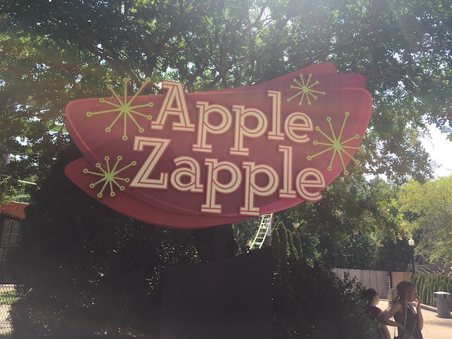

| |
Kings Dominion Review

Kings Dominion is a very nice and well run amusement park. This is one of the Cedar Fair parks that people seem to have mixed reactions to. However, people rarely place this park in the middle of the Cedar Fair pack (except for me). People either seem to really like this place or regard it as one of the weaker Cedar Fair parks. On the one hand, this park has an amazing coaster collection. I mean, Pantherian and Twisted Timbers is easily up there as one of the best One-Two Punches of any theme park. Add Dominator on top of that, and we truly have a coaster collection that really is something special. So that's something that people will generally hype about when discussing Kings Dominion. However, if people want to criticize the park, well....there's certainly them taking out a lot of rides. For all the cool rides they've added, they've removed quite a lot. They removed Volcano (which really bummed me as I was hoping to get on that), and then the Crypt (at least I got on that), and now Anacaonda is gone. Plus, the coaster collection outside of the 3 I initially mentioned isn't that great (But with those 3, you can't complain). Plus, all the other rides that Kings Dominion has, it's just a really nice amusement park and a good place to spend some time. No doubt about that.
Rollercoasters
There is a link to a review of all the Rollercoasters at Kings Dominion.
Please keep in mind that there is no review of Backlot Stunt Coaster or Rapterra because it either was closed when I last visited, or it didn't exist.
Top Coasters
Pantherian Review

Twisted Timbers Review

Very Good Coasters
Dominator Review

Fun Coasters
Flight of Fear Review

Grizzly Review

Racer 75 Review
Family Coasters
Apple Zapple Review

Avalanche Review

Kiddy Coasters
Woodstock Express Review

Past Coasters
Anaconda Review

Flat Rides
Here are the reviews of all the Flat Rides at Kings Dominion. The Flat Ride Collection is pretty good at Kings Dominion. However, I certainly wouldn't call it amazing or anything like that. Especially with their recent removal of The Crypt. That alone pretty much knocks their flat ride collection down a knotch. But nonetheless, they still have some really good flat rides. The best would be without a doubt, Drop Zone. And this isn't just a standard drop tower. No, this thing is a MONSTEROUS Ring Drop. Seriously, this thing is HUGE!!! And it is FAST!!!! Yeah, the view from the top may not be very good, but that drop. HOLY SH*T!!! I know you sort of go into "Falling Mode" when on the ride, where your brain pretty much just shuts off and all you can think is...."I'm falling". And then at the bottom, a big adrenaline rush. Great ride, and while it's no Blue Fall, it's still great and one of the best drop towers. I would talk about the Crypt next, since...it was easily their 2nd best ride, as well as the 2nd best Top Spin. However, they got rid of that, and now that Top Spins are an endangered species, I HIGHLY recommend riding it while at a park with one. Anyways, back to Kings Dominion. The only other flat rides I rode are their flyers, which....are not very good. LAME!!! LET US SNAP DAMN IT!!! There's Americana, the parks hand-me-down ferris wheel from Geauga Lake. And finally, the bumper cars. These things have dumb one-way rules, and as such, fail as Bumper Cars. And while that's all I rode, there are plenty more flat rides worth discussing. There's Delerium, the parks hexagon-shaped frisbee (Kind of wish I took 5 minutes to ride it when I was there. Oh well), another Windseeker (the view would suck), some chairswings, a scrambler, a carousel, and one of those evil nut-busting Inverted Pirate Ships from hell that are horrible and that I hate.
 One of Kings Dominion's best rides as well as one of the best drop towers.
One of Kings Dominion's best rides as well as one of the best drop towers.
Dark Rides
Kings Dominion does indeed have a dark ride. But it's nothing special. It's just the standard Boo Blasters ride. They have this same ride at Carowinds and Kings Island. You ride it, shoot all the ghosts, get a score, have some fun. Far from the best dark ride ever. But hey. It's still a fun ride. I mean, this is Boo Blasters at Kings Dominion. Are you really expecting something world class here?
People have always said that there was a haunted house here. But I never believed them!
Water Rides
Kings Dominion has a couple water rides. Nothing special, but hey. Let's go over the one that I actually managed to ride. The Shenandoah Lumberjack Company. Yes, that's really what their log flume is named. And...it's an all right log flume. Not the best by any means, but I will admit that it is one of the better log flumes. The drops are of a decent size, and it's really located in a lot of shade, which'll help cool you down on a hot day. The entire ride kind of reminds me of the old Log Jammer that used to reside at Six Flags Magic Mountain. Also, they have a River Rapids ride here as well. Never rode it, but it seemed pretty standard from photos.
 One of the better log flumes.
One of the better log flumes.
Water Park
And then there's their water park. I never went to it, but from photos I've seen, it doesn't look like anything special. Maybe I'm wrong, I'll just have to visit it and see.
Dining
I did not eat at Kings Dominion.
Theming and Other Attractions
Here are the reviews of all the other stuff at Kings Dominion. For theming, well...there is none. OK, that's technically not true since....there's a little bit of Peanuts theming in Planet Snoopy. But come on. That's pretty typical and standard. I think it's safe to say that Kings Dominion is not a big theme park and is strictly an amusement park (Busch Gardens Williamsburg has that market covered). All right. Well....what about other stuff to do? Uh....there's not a ton of other things that aren't rides to do at Kings Dominion. There's some games on the midway that you can play. And also, I'm pretty sure there's some shows. I know I saw posters for some sort of Monster Truck show, as well as an arena for that. So....if monster trucks are your thing, well....there should be a good show on that at Kings Dominion. However....this park is all about the rides.
In Conclusion
Kings Dominion is a very fun amusement park. And if your main thing is coasters, pure and simple, then this park'll really have A LOT for you. I mean, like I already said, Intimidator 305 and Twisted Timbers alone really make this park worth visiting. And I'm not even getting into Dominator, which also kicks all sorts of ass. Plus, there's also just plenty of other coasters that while aren't anything special by any means, still are fun to ride. And this doesn't even mention the fact that I do have confidence that this park'll get some cool new coasters in the future. I mean, this park did have Hypersonic XLC and Volcano. Which does make me think that more good coasters are in the parks future (though having their next installation apparently be an S&S Free Spin reduces that confidence). Sure, it's not exactly the most balanced park ever. But at the same time, it is a really fun park to visit and what I consider to be one of the better Cedar Fair Parks. So if you're in the area around Richmond, Virginia, and are a coaster enthusiast, definately check out Kings Dominion. There are some great coasters waiting here for you.
Enthusiast FAQs.
*Are there kiddy coaster restrictions? - No and Yes. There are no restrictions for Woodstock Express. But you do need a child to ride the Great Pumpkin Coaster.

Tips
*Be sure to get lots of rides on Intimidator 305. It's amazing and totally worth it.
*Head to Twisted Timbers first. I305 surprisingly rarely gets a line (PUSSIES) and Twisted Timbers can be finicky.
*Have Fun!!!!
Location
Doswell, Virginia, U.S.A
Theme Park Category:
Amusement Park
Last Day Visited
July 28, 2019
Video
I don't think I shot enough video to make a Kings Dominion Video
Complete Update List
2019
Mid-Atlantic Trip 2019
Here's a link to the parks website.
Home
|